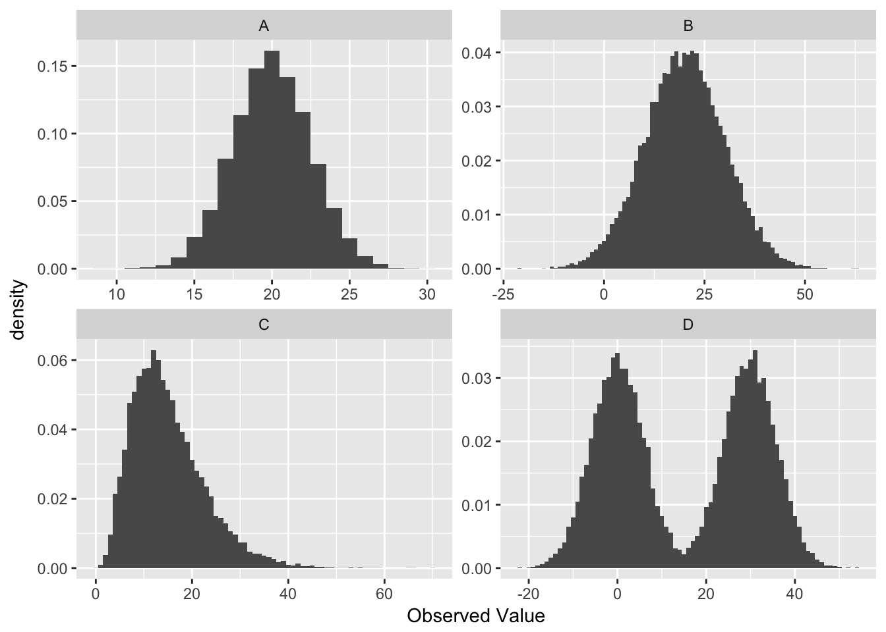
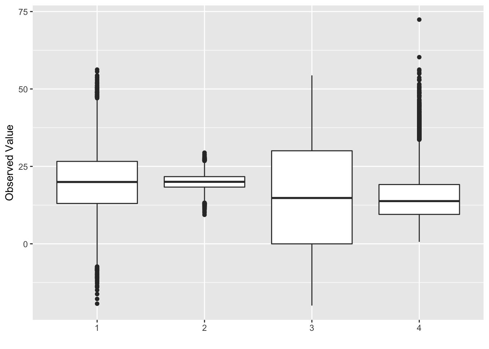

Introduction to Statistical Methodology
Derek L. Sonderegger
2017-01-24
Chapter 1 Summary Statistics and Graphing
When confronted with a large amount of data, we seek to summarize the data into statistics that somehow capture the essence of the data with as few numbers as possible. Graphing the data has a similar goal… to reduce the data to an image that represents all the key aspects of the raw data. In short, we seek to simplify the data in order to understand the trends while not obscuring important structure.
# Every chapter, we will load all the librarys we will use at the beginning
# of the chapter. If you
library(mosaicData) # library of datasets we'll use
library(ggplot2) # graphing functions
library(dplyr) # data summary toolsFor this chapter, we will consider data from a the 2005 Cherry Blossom 10 mile run that occurs in Washington DC. This data set has 8636 observations that includes the runners state of residence, official time (gun to finish, in seconds), net time (start line to finish, in seconds), age, and gender of the runners.
head(TenMileRace) # examine the first few rows of the data## state time net age sex
## 1 VA 6060 5978 12 M
## 2 MD 4515 4457 13 M
## 3 VA 5026 4928 13 M
## 4 MD 4229 4229 14 M
## 5 MD 5293 5076 14 M
## 6 VA 6234 5968 14 MIn general, I often need to make a distinction between two types of data.
- Discrete (also called Categorical) data is data that can only take a small set of particular values. For example a college student’s grade can be either A, B, C, D, or F. A person’s sex can be only Male or Female.Actually this isn’t true as both gender and sex are far more complex. However from a statistical point of view it is often useful to simplify our model of the world. George Box famously said, “All models are wrong, but some are useful.” Discrete data could also be numeric, for example a bird could lay 1, 2, 3, … eggs in a breeding season.
- Continuous data is data that can take on an infinite number of numerical values. For example a person’s height could be 68 inches, 68.2 inches, 68.23212 inches.
To decided if a data attribute is discrete or continuous, I often as “Does a fraction of a value make sense?” If so, then the data is continuous.
1.1 Graphical summaries of data
1.1.1 Univariate - Categorical
If we have univariate data about a number of groups, often the best way to display it is using barplots. They have the advantage over pie-charts that groups are easily compared.
ggplot(TenMileRace, aes(x=sex)) + geom_bar()
One thing that can be misleading is if the zero on the y-axis is removed. In the following graph it looks like there are twice as many female runners as male until you examin the y-axis closely. In general, the following is a very misleading graph.
ggplot(TenMileRace, aes(x=sex)) +
geom_bar() +
coord_cartesian(ylim = c(4300, 4330))
1.1.2 Univariate - Continuous
A histogram looks very similar to a bar plot, but is used to represent continuous data instead of categorical and therefore the bars will actually be touching.
ggplot(TenMileRace, aes(x=net)) + geom_histogram()
Often when a histogram is presented, the y-axis is labeled as “frequency” or “count” which is the number of observations that fall within a particular bin. However, it is often desirable to scale the y-axis so that if we were to sum up the area \((height * width)\) then the total area would sum to 1. The rescaling that accomplishes this is \[density=\frac{\#\;observations\;in\;bin}{total\;number\;observations}\cdot\frac{1}{bin\;width}\]
1.1.3 Bivariate - Categorical vs Continuous
We often wish to compare response levels from two or more groups of interest. To do this, we often use side-by-side boxplots. Notice that each observation is associated with a continuous response value and a categorical value.
ggplot(TenMileRace, aes(x=sex, y=net)) + geom_boxplot()
In this graph, the edges of the box are defined by the 25% and 75% quantiles. That is to say, 25% of the data is to the below of the box, 50% of the data is in the box, and the final 25% of the data is to the above of the box. The dots are data points that traditionally considered outliers.Define the Inter-Quartile Range (IQR) as the length of the box. Then any observation more than 1.5*IQR from the box is considered an outlier.
Sometimes I think that box-and-whisker plot obscures too much of the details of the data and we should look at the side-by-side histograms instead.
ggplot(TenMileRace, aes(x=net)) +
geom_histogram() +
facet_grid( . ~ sex ) # side-by-side plots based on sex
Orientation of graphs can certainly matter. In this case, it makes sense to stack the two graphs to facilitate comparisons.
ggplot(TenMileRace, aes(x=net)) +
geom_histogram() +
facet_grid( sex ~ . ) # side-by-side plots based on sex## `stat_bin()` using `bins = 30`. Pick better value with `binwidth`.
1.1.4 Bivariate - Continuous vs Continuous
Finally we might want to examine the relationship between two continuous random variables.
ggplot(TenMileRace, aes(x=age, y=net, color=sex)) +
geom_point()
1.2 Measures of Centrality
The most basic question to ask of any dataset is ‘What is the typical value?’ There are several ways to answer that question and they should be familiar to most students.
1.2.1 Mean
Often called the average, or arithmetic mean, we will denote this special statistic with a bar. We define \[\bar{x}=\frac{1}{n}\sum_{i=1}^{n}x_{i}=\frac{1}{n}\left(x_{1}+x_{2}+\dots+x_{n}\right)\]
If we want to find the mean of five numbers \(\left\{ 3,6,4,8,2\right\}\) the calculation is \[\bar{x} = \frac{1}{5}\left(3+6+4+8+2\right) = \frac{1}{5}\left(23\right) = 23/5 = 4.6\]
This can easily be calculated in R by using the function mean(). We first extract the column we are interested in using the notation: DataSet$ColumnName where the $ signifies grabbing the column.
mean( TenMileRace$net ) # Simplest way of doing this calculation## [1] 5599.065TenMileRace %>% summarise( mean(net) ) # using the dplyr package## mean(net)
## 1 5599.0651.2.2 Median
If the data were to be ordered, the median would be the middle most observation (or, in the case that \(n\) is even, the mean of the two middle most values).
In our simple case of five observations \(\left\{ 3,6,4,8,2\right\}\), we first sort the data into \(\left\{ 2,3,4,6,8\right\}\) and then the middle observation is clearly \(4\).
In R the median is easily calculated by the function median().
# median( TenMileRace$net )
TenMileRace %>% summarise( median(net) ) ## median(net)
## 1 55551.2.3 Mode
This is the observation value with the most number of occurrences. This measure of “center” is not often used
1.2.4 Examples
- If my father were to become bored with retirement and enroll in my STA 570 course, how would that affect the mean and median age of my 570 students?
- The mean would move much more than the median. Suppose the class has 5 people right now, ages 21, 22, 23, 23, 24 and therefore the median is 23. When my father joins, the ages will be 21, 22, 23, 23, 24, 72 and the median will remain 23. However, the mean would move because we add in such a large outlier. Whenever we are dealing with skewed data, the mean is pulled toward the outlying observations.
- In 2010, the median NFL player salary was $770,000 while the mean salary was $1.9 million. Why the difference?
- Because salary data is skewed superstar players that make huge salaries (in excess of 20 million) while the minimum salary for a rookie is $375,000. Financial data often reflects a highly skewed distribution and the median is often a better measure of centrality in these cases.
1.3 Measures of Variation
The second question to ask of a dataset is ‘How much variability is there?’ Again there are several ways to measure that.
1.3.1 Range
Range is the distance from the largest to the smallest value in the dataset.
#vmax( TenMileRace$net ) - min( TenMileRace$net )
TenMileRace %>% summarise( range = max(net) - min(net) )## range
## 1 77221.3.2 Inter-Quartile Range
The p-th percentile is the observation (or observations) that has at most \(p\) percent of the observations below it and \((1-p)\) above it, where \(p\) is between 0 and 100. The median is the \(50\)th percentile. Often we are interested in splitting the data into four equal sections using the \(25\)th, \(50\)th, and \(75\)th percentiles (which, because it splits the data into four sections, we often call these the \(1\)st, \(2\)nd, and \(3\)rd quartiles).
In general I could be interested in dividing my data up into an arbitrary number of sections, and refer to those as quantiles of my data.
quantile( TenMileRace$net ) # this works## 0% 25% 50% 75% 100%
## 2814 4950 5555 6169 10536# I can't do the following because the quantile() function spits out 5 values, not 1
# TenMileRace %>% summarise( quantile(net) ) The inter-quartile range (IQR) is defined as the distance from the \(3\)rd quartile to the \(1\)st.
# IQR( TenMileRace$net )
TenMileRace %>% summarise( IQR(net) ) ## IQR(net)
## 1 1219Notice that we’ve defined IQR before when we looked at box-and-whisker plots and this is exactly the length of the box.
1.3.3 Variance
One way to measure the spread of a distribution is to ask “what is the typical distance of an observation to the mean?” We could define the \(i\)th deviate as \[e_{i}=x_{i}-\bar{x}\] and then ask what is the average deviate? The problem with this approach is that the sum (and thus the average) of all deviates is always 0. \[\sum_{i=1}^{n}(x_{i}-\bar{x}) = \sum_{i=1}^{n}x_{i}-\sum_{i=1}^{n}\bar{x} = n\frac{1}{n}\sum_{i=1}^{n}x_{i}-n\bar{x} = n\bar{x}-n\bar{x} = 0\]
The big problem is that about half the deviates are negative and the others are positive. What we really care is the distance from the mean, not the sign. So we could either take the absolute value, or square it.
There are some really good theoretical reasons to chose the square option. Squared terms are easier to deal with compared to absolute values, but more importantly, the spread of the normal distribution is parameterized via squared distances from the mean. Because the normal distribution is so important, we’ve chosen to define the sample variance so it matches up with the natural spread parameter of the normal distribution. So we square the deviates and then find the average deviate size (approximately) and call that the sample variance. \[s^{2}=\frac{1}{n-1}\sum_{i=1}^{n}\left(x_{i}-\bar{x}\right)^{2}\] Why do we divide by \(n-1\) instead of \(n\)?
- If I divide by \(n\), then on average, we would tend to underestimate the population variance \(\sigma^{2}\).
- The reason is because we are using the same set of data to estimate \(\sigma^{2}\) as we did to estimate the population mean (\(\mu\)). If I could use
\[\frac{1}{n}\sum_{i=1}^{n}\left(x_{i}-\mu\right)^{2}\] as my estimator, we would be fine. But because I have to replace \(\mu\) with \(\bar{x}\) we have to pay a price. - Because the estimation of \(\sigma^{2}\) requires the estimation of one other quantity, and using using that quantity, you only need \(n-1\) data points and can then figure out the last one, we have used one degree of freedom on estimating the mean and we need to adjust the formula accordingly.
In later chapters we’ll give this quantity a different name, so we’ll introduce the necessary vocabulary here. Let \(e_{i}=x_{i}-\bar{x}\) be the error left after fitting the sample mean. This is the deviation from the observed value to the “expected value” \(\bar{x}\). We can then define the Sum of Squared Error as \[SSE=\sum_{i=1}^{n}e_{i}^{2}\]
and the Mean Squared Error as \[MSE=\frac{SSE}{df}=\frac{SSE}{n-1}=s^{2}\] where \(df=n-1\) is the appropriate degrees of freedom.
Calculating the variance of our small sample of five observations \(\left\{ 3,6,4,8,2\right\}\), recall that the sample mean was \(\bar{x}=4.6\)
| \(x_i\) | \((x_i-\bar{x})\) | \((x_i-\bar{x})^2\) |
|---|---|---|
3 |
|
2.56 |
6 |
|
1.96 |
4 |
|
0.36 |
8 |
|
11.56 |
2 |
|
6.76 |
| SSE = 23.2 |
and so the sample variance is \[s^2 = \frac{SSE}{n-1} = \frac{23.2}{(n-1)} = \frac{23.2}{4}=5.8\]
Clearly this calculation would get very tedious to do by hand and computers will be much more accurate in these calculations. In R, the sample variance is easily calculated by the function var().
ToyData <- data.frame( x=c(3,6,4,8,2) )
# var( ToyData$x )
ToyData %>% summarise( s2 = var(x) )## s2
## 1 5.8For the larger TenMileRace data set, the variance is just as easily calculated.
# var( TenMileRace$net )
TenMileRace %>% summarise( s2 = var(net) )## s2
## 1 940233.51.3.4 Standard Deviation
The biggest problem with the sample variance statistic is that the units are in the original units-squared. That means if you are looking at data about car fuel efficiency, then the values would be in mpg\(^{2}\) which are units that I can’t really understand. The solution is to take the positive square root, which we will call the sample standard deviation. \[s=\sqrt{s^{2}}\] But why do we take the jog through through variance? Mathematically the variance is more useful and most distributions (such as the normal) are defined by the variance term. Practically though, standard deviation is easier to think about.
The sample standard deviation is important enough for R to have function that will calculate it for you.
# sd( TenMileRace$net )
TenMileRace %>% summarise( s = sd(net) )## s
## 1 969.65641.3.5 Coefficient of Variation
Suppose we had a group of animals and the sample standard deviation of the animals lengths was 15 cm. If the animals were elephants, you would be amazed at their uniformity in size, but if they were insects, you would be astounded at the variability. To account for that, the coefficient of variation takes the sample standard deviation and divides by the absolute value of the sample mean (to keep everything positive)
\[CV=\frac{s}{\vert\bar{x}\vert}\]
TenMileRace %>% summarise( s = sd(net),
xbar = mean(net),
cv = s / abs(xbar) )## s xbar cv
## 1 969.6564 5599.065 0.1731818# For fun, lets calculate these same statistics but separated by sex...
TenMileRace %>%
group_by(sex) %>%
summarise( xbar = mean(net),
s = sd(net),
cv = s / abs(xbar) )## # A tibble: 2 × 4
## sex xbar s cv
## <fctr> <dbl> <dbl> <dbl>
## 1 F 5916.398 902.1090 0.1524761
## 2 M 5280.702 929.9817 0.17610951.3.6 Empirical Rule of Thumb
For any mound-shaped sample of data the following is a reasonable rule of thumb:
| Interval | Approximate percent of Measurements |
|---|---|
| \(\bar{x}\pm s\) | 68% |
| \(\bar{x}\pm 2s\) | 95% |
| \(\bar{x}\pm 3s\) | 99.7% |

1.4 Exercises
O&L 3.21. The ratio of DDE (related to DDT) to PCB concentrations in bird eggs has been shown to have had a number of biological implications. The ratio is used as an indication of the movement of contamination through the food chain. The paper “The ratio of DDE to PCB concentrations in Great Lakes herring gull eggs and its us in interpreting contaminants data” reports the following ratios for eggs collected at 13 study sites from the five Great Lakes. The eggs were collected from both terrestrial and aquatic feeding birds.
Source Type
DDE to PCB Ratio
Terrestrial
76.50, 6.03, 3.51, 9.96, 4.24, 7.74, 9.54, 41.70, 1.84, 2.5, 1.54
Aquatic
0.27, 0.61, 0.54, 0.14, 0.63, 0.23, 0.56, 0.48, 0.16, 0.18
- By hand, compute the mean and median separately for each type of feeder.
- Using your results from part (a), comment on the relative sensitivity of the mean and median to extreme values in a data set.
- Which measure, mean or median, would you recommend as the most appropriate measure of the DDE to PCB level for both types of feeders? Explain your answer.
O&L 3.31. Consumer Reports in its June 1998 issue reports on the typical daily room rate at six luxury and nine budget hotels. The room rates are given in the following table.
Hotel Type Nightly Rate Luxury $175, $180, $120, $150, $120, $125 Budget $50, $50, $49, $45, $36, $45, $50, $50, $40 - By hand, compute the means and standard deviations of the room rates for each class of hotel.
- Give a practical reason why luxury hotels might have higher variability than the budget hotels. (Don’t just say the standard deviation is higher because there is more spread in the data, but rather think about the Hotel Industry and why you might see greater price variability for upscale goods compared to budget items.)
Use R to confirm your calculations in problem 1 (the pollution data). Show the code you used and the subsequent output. It will often be convenient for me to give you code that generates a data frame instead of uploading an Excel file and having you read it in. The data can be generated using the following commands:
PolutionRatios <- data.frame( Ratio = c(76.50, 6.03, 3.51, 9.96, 4.24, 7.74, 9.54, 41.70, 1.84, 2.5, 1.54, 0.27, 0.61, 0.54, 0.14, 0.63, 0.23, 0.56, 0.48, 0.16, 0.18 ), Type = c( rep('Terrestrial',11), rep('Aquatic',10) ) ) # Print out some of the data to confirm what the column names are head( PolutionRatios )## Ratio Type ## 1 76.50 Terrestrial ## 2 6.03 Terrestrial ## 3 3.51 Terrestrial ## 4 9.96 Terrestrial ## 5 4.24 Terrestrial ## 6 7.74 TerrestrialHint: for computing the means and medians for each type of feeder separately, the
group_by()command we demonstated earlier in the chapter is convenient.Use R to confirm your calculations in problem 2 (the hotel data). Show the code you used and the subsequent output. The data can be loaded into a data frame using the following commands Show the code you used and the subsequent output:
Hotels <- data.frame( Price = c(175, 180, 120, 150, 120, 125, 50, 50, 49, 45, 36, 45, 50, 50, 40), Type = c( rep('Luxury',6), rep('Budget', 9) ) ) # Print out some of the data to confirm what the column names are head( Hotels )## Price Type ## 1 175 Luxury ## 2 180 Luxury ## 3 120 Luxury ## 4 150 Luxury ## 5 120 Luxury ## 6 125 LuxuryFor the hotel data, create side-by-side box-and-whisker plots to compare the prices.
Match the following histograms to the appropriate boxplot.
 
- Histogram A goes with boxplot __________
- Histogram B goes with boxplot __________
- Histogram C goes with boxplot __________
- Histogram D goes with boxplot __________
Twenty-five employees of a corporation have a mean salary of $62,000 and the sample standard deviation of those salaries is $15,000. If each employee receives a bonus of $1,000, does the standard deviation of the salaries change? Explain your reasoning.